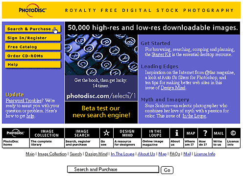
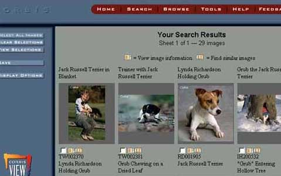
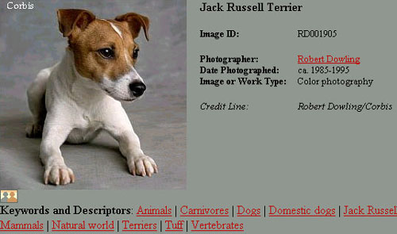
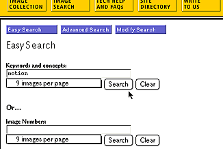

|
| ||
|
| ||
Posted December 2, 1997
Contents
Introduction
First, a Little Background Music
Design for Your Audience
Search and Ye Shall Find
Conclusion
You might think of Corbis and PhotoDisc, two of the most well-known online digital-image purveyors, as intense competitors. They both license images. They both rely on the Internet for searching, accessing, and delivering images to their customers. They face the same fundamental challenges in the design of their sites: how to best provide access to large volumes of visual information to visitors who are sometimes incredibly focused, and sometimes have only vague ideas of what they need. I wanted to find out about these two companies, so I visited each site. From Corbis, I spoke with Marketing Programs Coordinator Chris Risdon; from PhotoDisc, Vice President of Business Development Wayne Wong and Director of Online Systems Bill Heston.
In reality, Corbis and PhotoDisc don't compete too much (PhotoDisc's recent merger agreement with Getty Images  notwithstanding), and the reasons stem from the types of images they carry -- as well as the audiences they serve. Their Internet sites strive for and achieve different goals, which becomes apparent after visiting the sites and talking with their developers.
notwithstanding), and the reasons stem from the types of images they carry -- as well as the audiences they serve. Their Internet sites strive for and achieve different goals, which becomes apparent after visiting the sites and talking with their developers.
Corbis, which is fondly referred to here at SBN as "Bill's Other Company," was founded in 1989. In the past few years, it has dramatically stepped up its image-acquisition activities, purchasing the digital rights to archives such as the Bettman Collection (17 million images that spans the history of human achievement) and the LGI Collection (1 million images of celebrities). Corbis also accepts submissions from contemporary photographers. More than one million of its twenty million images have been scanned into digital format and made available in its online catalog.
Just last month, Corbis went live with Corbis Images  , a portion of its site that spearheads an effort to provide more direct access to the Corbis catalog for professional image acquirers.
, a portion of its site that spearheads an effort to provide more direct access to the Corbis catalog for professional image acquirers.
PhotoDisc is one of the original purveyors of royalty-free digital images, opening its doors in 1991. PhotoDisc has built a collection of more than 50,000 images from submissions by an expanding group of professional photographers, illustrators, and artists. A pilot version of PhotoDisc's site went live in the fall of 1995, and proved its value immediately. During a series of major storms in the Eastern U.S., when package deliverers couldn't deliver catalog CDs in time to meet project deadlines for some customers, the Web site was able to plug the gaps.
The audiences for each of the PhotoDisc and Corbis sites could easily be characterized as on the leading-edge of their fields, by virtue of the fact that they are actively engaged in the acquisition of digital imagery through electronic commerce. But Heston, Wong, and Risdon were all quick to point out that didn't mean they needed to load their sites with lots of "bells and whistles." If anything, according to Risdon, it meant the reverse. "Our goal was to create a very utilitarian site. We didn't want to waste our visitors' time with a lot of needless features and distractions." The task of getting the right images from a massive database was complex enough. As a result, the Web site designers spent most of their efforts designing the user interface for accessing the image catalogs, the bread and butter of both sites.
In the case of PhotoDisc, whose audience is primarily graphic designers, illustrators, and art directors, the site exhibits a more design-centric feel. After chronicling user activity and interviewing frequent visitors (a practice they strongly encourage), Heston and Wong realized that "many visitors were using the (PhotoDisc) site not just for image access but as part of the creative process itself." Multiple queries on different images, textures, or compositions from the PhotoDisc site are used to brainstorm design ideas for a particular project. Recognizing that, Heston has continually emphasized efforts to create a community of users that visit the site regularly for ideas, updates, and collaboration.

The award-winning  PhotoDisc site was designed by Clement Mok , the renowned information designer. The home page
PhotoDisc site was designed by Clement Mok , the renowned information designer. The home page  is structured within a rectangle. A navigation bar arrays site destinations along the bottom. (The design is similar to that of Mok's own firm, StudioArchetype
is structured within a rectangle. A navigation bar arrays site destinations along the bottom. (The design is similar to that of Mok's own firm, StudioArchetype  .) The home page itself is tightly contained; subsequent pages use frames for controlling navigation.
.) The home page itself is tightly contained; subsequent pages use frames for controlling navigation.
In addition to the catalog viewing and searching options, PhotoDisc offers other destinations of interest to its target audience. Design Mind  is a serial magazine that offers interviews of designers, technical advice ("How to Calibrate Your Monitor"), and guest editorials. In the Loupe
is a serial magazine that offers interviews of designers, technical advice ("How to Calibrate Your Monitor"), and guest editorials. In the Loupe  showcases recent additions to the catalog, editor favorites, or selections across a specific theme. Each section presents its own design theme.
showcases recent additions to the catalog, editor favorites, or selections across a specific theme. Each section presents its own design theme.
Although graphic designers and advertisers constitute a significant portion of visitors to Corbis, the site also needs to accommodate book publishers, magazine publishers, history researchers, and journalists. These people are just as likely to be interested in the information "behind" the image (photographer, time period, method) or its editorial content as in its appearance and ability to be assimilated into a larger composition.
The redesign of CorbisImages  , which was done with Wilcher Design
, which was done with Wilcher Design  , reflects the vision of a directed user by tightening the navigation considerably over the original Corbis site. There is no navigation bar. All choices lead to points of action. Pages that provide background information also steer visitors to make action-related choices, such as "Access the Digital Collection" or "Browse by Concept."
, reflects the vision of a directed user by tightening the navigation considerably over the original Corbis site. There is no navigation bar. All choices lead to points of action. Pages that provide background information also steer visitors to make action-related choices, such as "Access the Digital Collection" or "Browse by Concept."
The visual appearance of the new site is simultaneously airier and more focused. The background was changed from black to white, the image activity on the home page reduced to one central pane, and the destinations channeled toward image viewing, selection, or purchase. The original Corbis site is still active, although with a much different design, to serve other segments of Corbis' market. It provides corporate overviews, job postings, and diversions, such as "exhibitions" from the archives (including a new Trip  module for Internet Explorer 4.0 users).
module for Internet Explorer 4.0 users).
The majority of effort on each company's site centers on their search engines. Both sites offer standard Boolean ("boy" AND "dog") searching, and PhotoDisc recently added natural language searching ("boy walking dog") to its "Power Search" capability. But even the search engines are tailored to the information needs of the audience. PhotoDisc shows a bias to the needs of designers, while the Corbis site offers a more comprehensive array of options.

Both sites display collections of thumbnails from images that match search results. Clicking on one of the thumbnails or a thumbnail icon leads to an enlarged image, background information, and a list of linked keywords associated with that image.

Corbis visitors can be interested in the editorial or visual content, and the sheer number of images available presents its own searching issues. "If you enter a search on, say, John F. Kennedy, you can get a host of images that include the words John F. Kennedy that might not be relevant to your needs," noted Risdon. "Images of the President as a youngster, in office, playing football, even the JFK airport, JFK libraries, JFK, Jr., and so on. To people looking to generate ideas, that might be fine. But we needed to give those with narrowly defined image needs more control."
The Corbis site balances the competing interests of searchers by giving registered users the ability to set multiple filters on a search: time period, photographer, concept, location, image or work type, and keywords that eliminate extraneous images ("NOT airport").

The PhotoDisc search capabilities cater more directly to the needs of graphic designers. Because the images selected by designers will most likely end up as part of a larger promotional composition, designers are more sensitive to visual representation than editorial content. The PhotoDisc site recognizes this by offering visitors the ability to jump to other images visually similar to a selected thumbnail. It even allows a visitor to prioritize the type of similarity to explore: composition, color, structure, and texture.
Once visitors locate images they are interested in, both sites offer a capability to collect and store those images for future review or purchase. The collections -- called "lightboxes" at PhotoDisc, "image sets" at Corbis -- can be saved on the site servers for later access. Thus, researchers can do an initial screening, to be accessed later by clients or art directors for final approval.
Both Corbis and PhotoDisc present excellent examples of the real value that focused, purpose-built Web sites can deliver. A few annoyances or minor bugs arose at each site -- but given the scale of the projects and the volume of traffic (sometimes more than 500 concurrent users), the solid design and usefulness of each site was evident. I often found myself marveling at the diversity and quality of the images in both sites; the history evident at Corbis was breathtaking, while even I could envision using the PhotoDisc images in project compositions. The fact that I didn't have to travel from my desk made the visit that much more enjoyable.
Photo Credit: PhotoDisc; Library of Congress/Corbis
Did you find this material useful? Gripes? Compliments? Suggestions for other articles? Write us!
© 1999 Microsoft Corporation. All rights reserved. Terms of use.